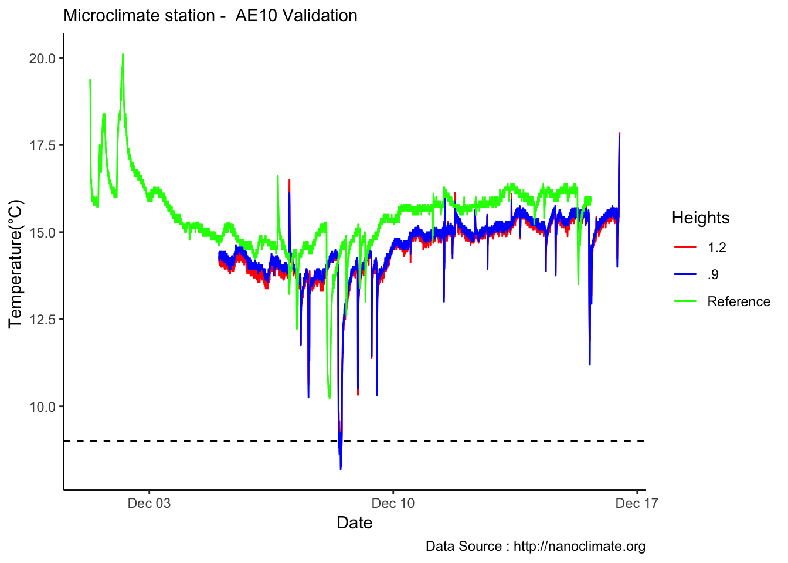

Chapter 10 12-17-2018
Comparison to LaCrosse Weather Station
mclim_AE16_CN01_Calib<-read_csv('./data/AE16CN-Calbration.CSV')## Parsed with column specification:
## cols(
## date = col_character(),
## temp1 = col_double(),
## temp2 = col_double(),
## temp3 = col_double(),
## temp4 = col_double(),
## windspeed1 = col_double(),
## windspeed2 = col_double(),
## windspeed3 = col_double(),
## windspeed4 = col_double(),
## winddirection1 = col_integer(),
## winddirection2 = col_integer(),
## winddirection3 = col_integer(),
## winddirection4 = col_integer(),
## solar = col_integer(),
## battery = col_double()
## )names(mclim_AE16_CN01_Calib)## [1] "date" "temp1" "temp2" "temp3"
## [5] "temp4" "windspeed1" "windspeed2" "windspeed3"
## [9] "windspeed4" "winddirection1" "winddirection2" "winddirection3"
## [13] "winddirection4" "solar" "battery"mclim_AE16_CN01_Calib$time <- as_datetime(mclim_AE16_CN01_Calib$date, format="%m/%d/%y %H:%M:%S",tz="America/Los_Angeles")
mclim_AE16_CN01_Calib$time <-as.POSIXct(mclim_AE16_CN01_Calib$time)
#Add hour month and day
## 11-05-2018
mclim_AE16_CN01_Calib$hr <- hour(mclim_AE16_CN01_Calib$time)
mclim_AE16_CN01_Calib$minute <- minute(mclim_AE16_CN01_Calib$time)
mclim_AE16_CN01_Calib$day <- day(mclim_AE16_CN01_Calib$time)
mclim_AE16_CN01_Calib$month<- month(mclim_AE16_CN01_Calib$time)Read in LaCrosse
library(weathermetrics)
LaCrosse_Calib<-read_csv('./data/LaCrosse_20181116-20181215.csv')## Parsed with column specification:
## cols(
## Time = col_datetime(format = ""),
## HeatIndex_F = col_integer(),
## `Humidity RH%` = col_integer(),
## Temperature_F = col_double()
## )names(LaCrosse_Calib)## [1] "Time" "HeatIndex_F" "Humidity RH%" "Temperature_F"LaCrosse_Calib$Temperature_C<- weathermetrics::fahrenheit.to.celsius(LaCrosse_Calib$Temperature_F)
#LaCrosse_Calib$dtime <- as_datetime(LaCrosse_Calib$Time, format="%Y-%m-%d %H:%M:%S",tz="America/Los_Angeles")
#LaCrosse_Calib$dtime <-as.POSIXct(LaCrosse_Calib$Time)
#Add hour month and day
## 11-05-2018
LaCrosse_Calib$hr <- hour(LaCrosse_Calib$Time)
LaCrosse_Calib$minute <- minute(LaCrosse_Calib$Time)
LaCrosse_Calib$day <- day(LaCrosse_Calib$Time)
LaCrosse_Calib$month<- month(LaCrosse_Calib$Time)Raw plots
mclim_AE16_CN01_Calib %>% filter(day > 4) %>%
ggplot() +
geom_line(aes(time,temp1,col='A')) +
geom_line(aes(time,temp2,col='B')) +
geom_line(data=LaCrosse_Calib, aes(Time,Temperature_C,col='C')) +
theme_classic() + labs(x="Date", y="Temperature(°C) ",subtitle="Microclimate station - AE10 Validation ", caption="Data Source : http://nanoclimate.org") +
geom_hline(aes(yintercept=9),colour="black", linetype="dashed") +
scale_colour_manual(name = 'Heights',
values =c('A'='red','B'='blue','C'='green'), labels = c('1.2','.9',"Reference"))
Hourly